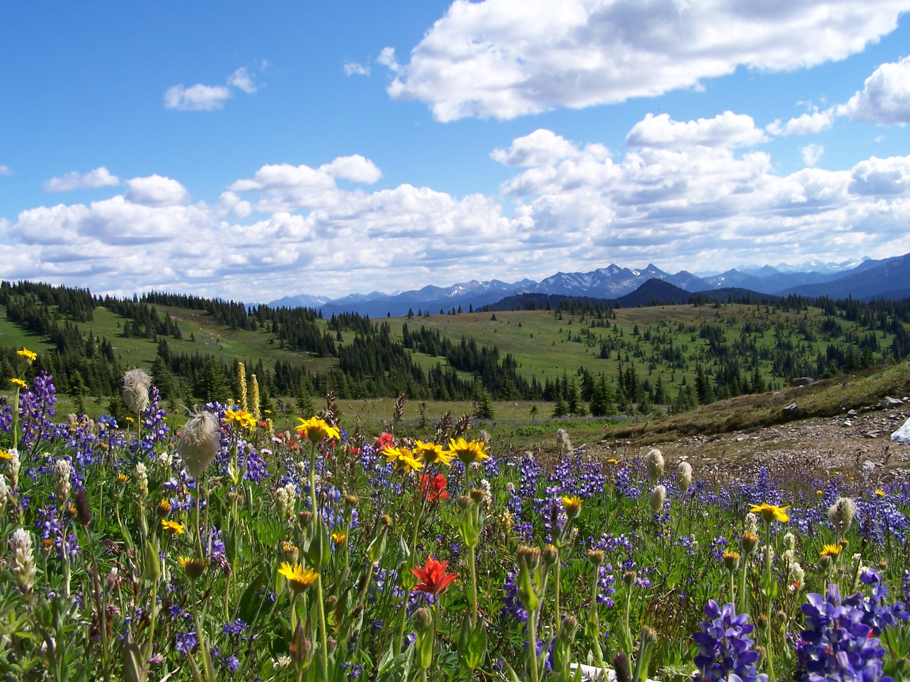
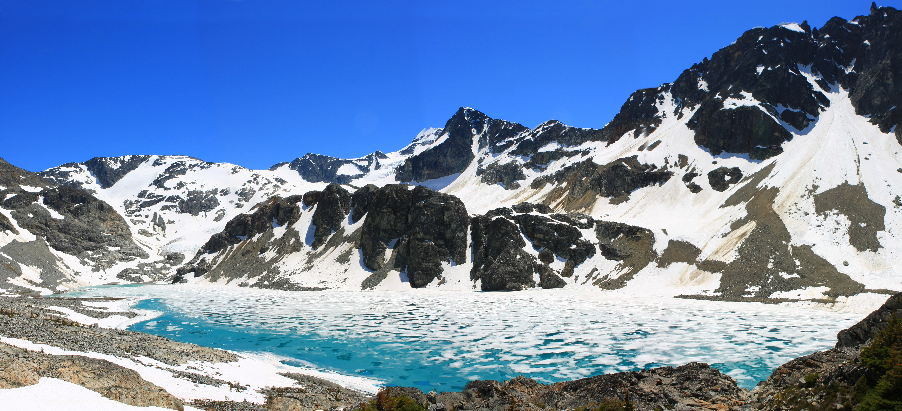
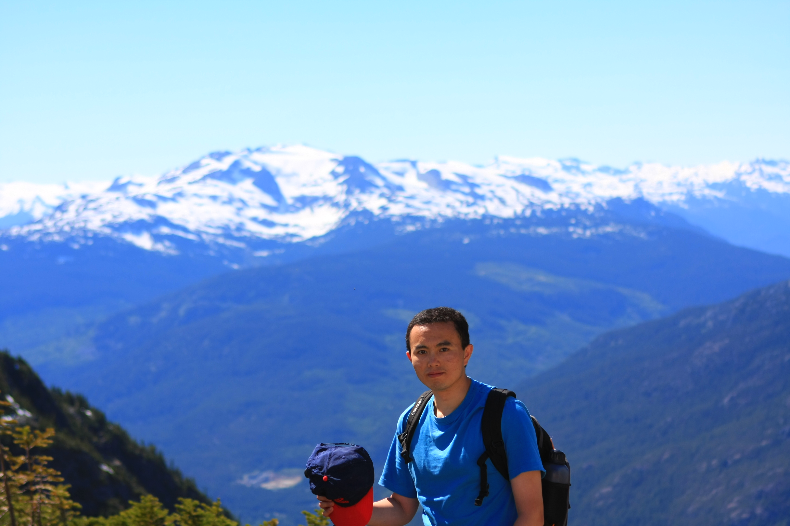
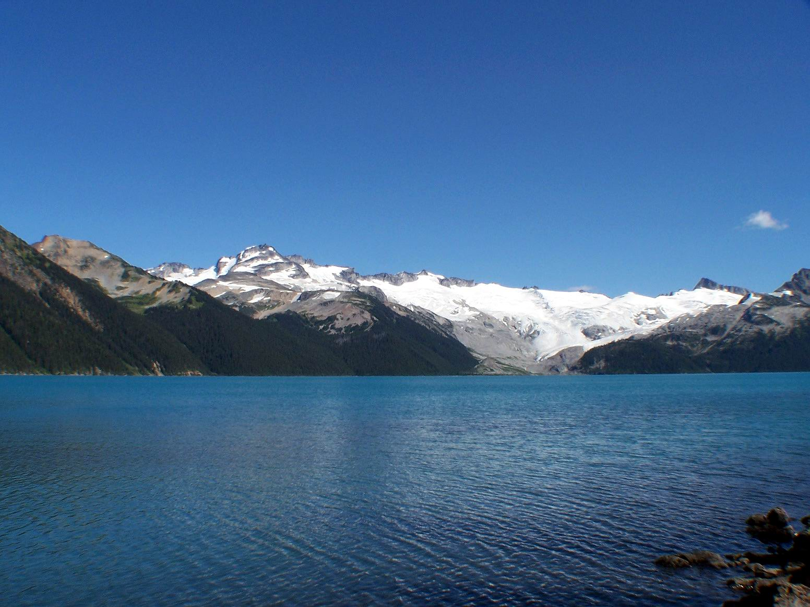
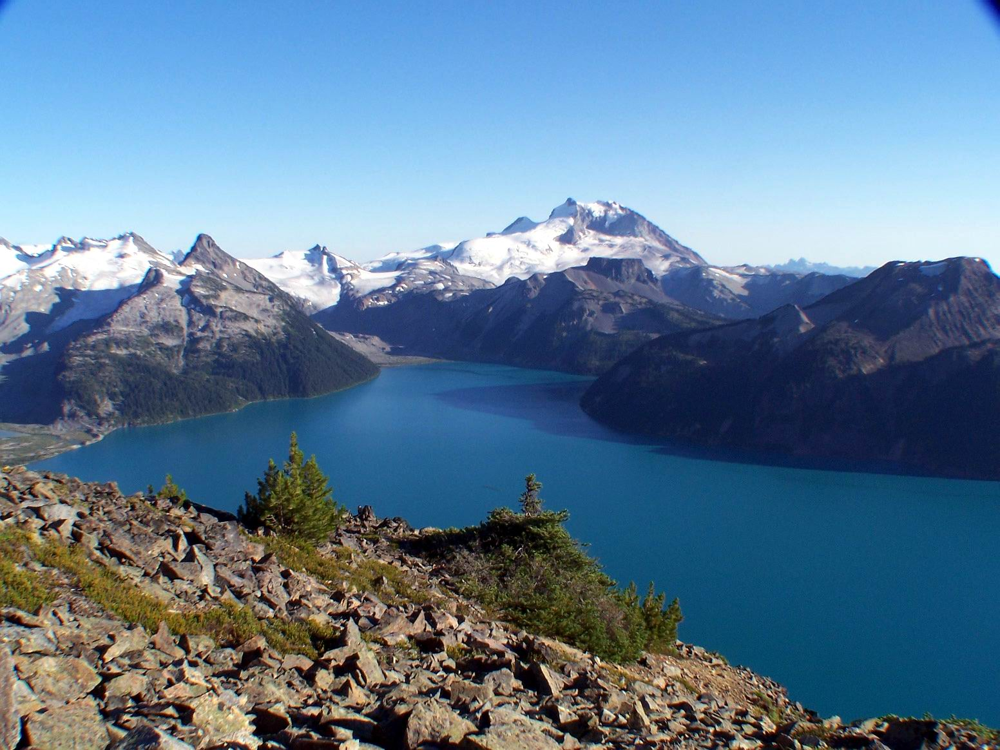
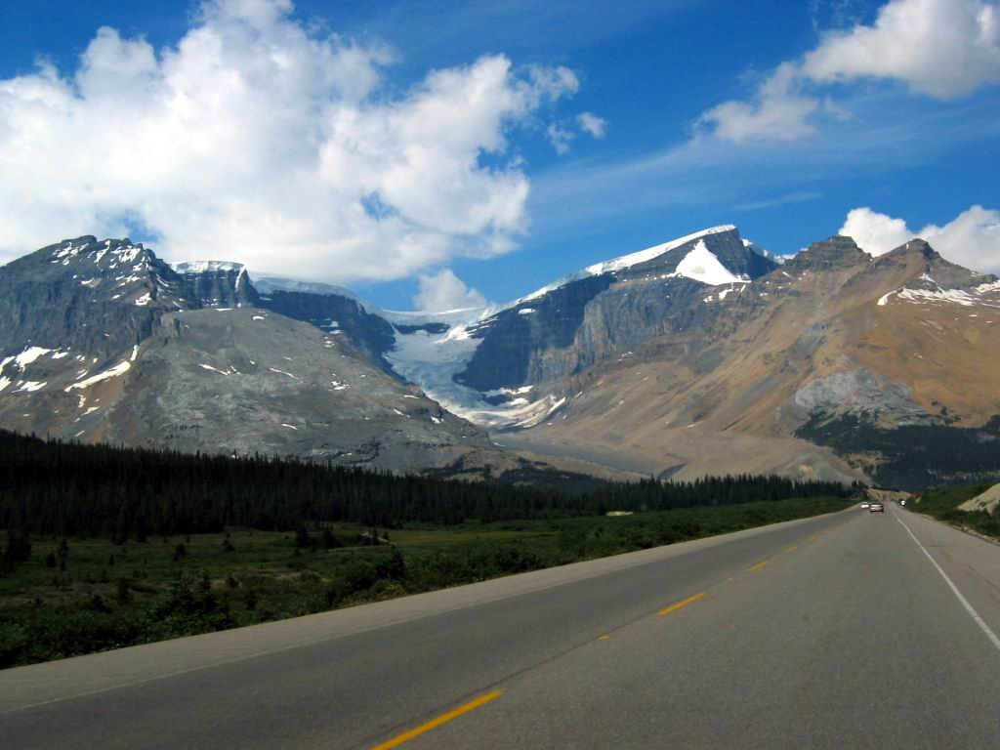
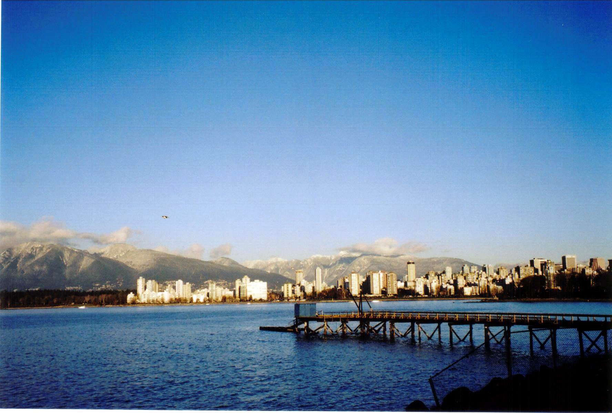

Sub-alpine meadow, Manning Park, BC Canada (August 2008)

Wedgemount Lake and Glacier, BC Canada (June 2008)
Courtesy of Andrey Stoyanov.

Happy hiking at Wedgemount Lake, BC Canada (June 2008)
Courtesy of Andrey Stoyanov.

Garibaldi Lake, BC Canada (August 2005)

Garibaldi Lake seen from the Panorama Ridge, BC Canada (August 2005)

Icefield Parkway, AB Canada (July 2004)

A winter afternoon, Vancouver, BC Canada (December 2003)
